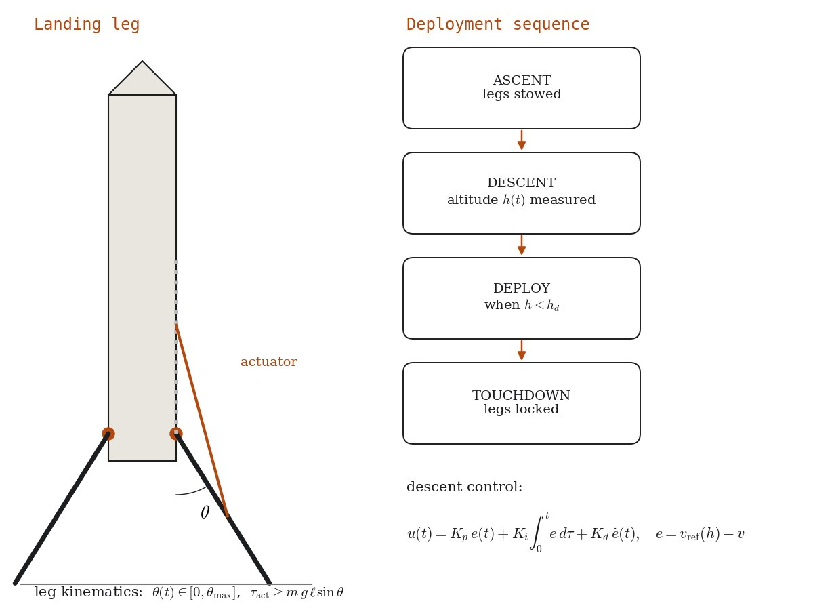
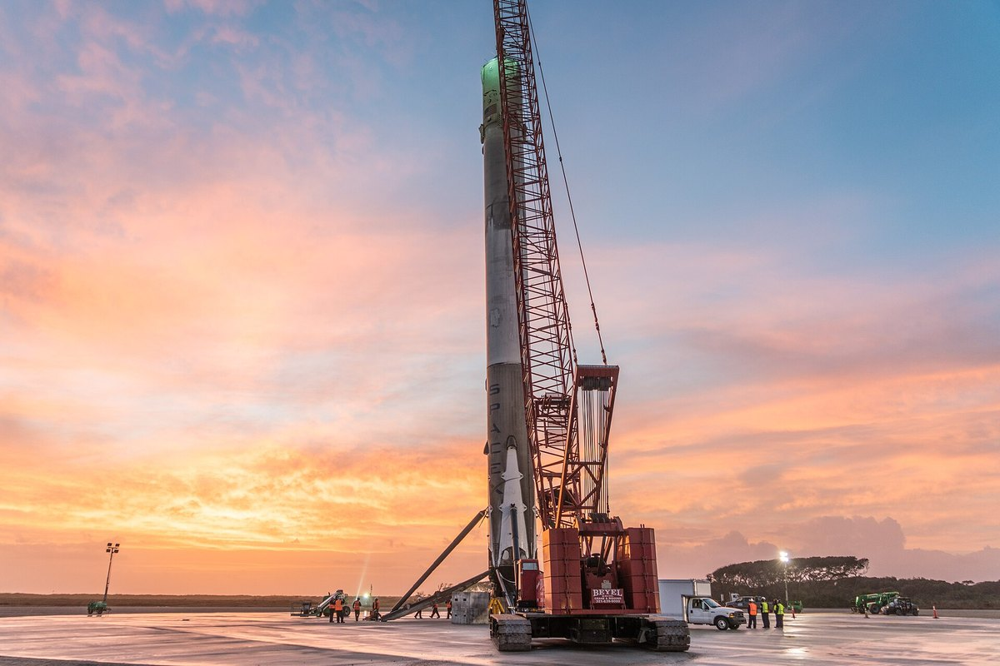

مشروع ميكاترونيك · جمعية Top Aéro الطلابية، جامعة السوربون / آرتس إي ميتييه · 2023–2024
جهاز هبوط مؤتمت لصاروخ من نوع Falcon 9
ميكاترونيكتصميم بالحاسوبتحكم

الملخص
استلهامًا من المرحلة الأولى القابلة لإعادة الاستعمال لصاروخ Falcon 9، عملت جمعيتنا الطلابية على صاروخ يهبط على أرجله الخاصة. صممت الأرجل القابلة للطيّ ببرنامج SolidWorks وبرمجت تسلسل الفتح والتحكم في الهبوط: أرجل مطوية أثناء الصعود، تُفتح تحت ارتفاع محدد، وتُقفل عند ملامسة الأرض.
الجانب التجريبي
نسخة مصغّرة من مشكلات أنظمة الألعاب الترفيهية والأنظمة الروبوتية الحقيقية: آلية يجب أن تُفتح في اللحظة المناسبة كل مرة، ومشغّل محسوب للحمولة، ومستشعرات تُقرأ في الزمن الحقيقي، وتسلسل يعود إلى حالة آمنة عند الحاجة.
المنهجية والمعادلات
الفتح آلة حالات يقودها الارتفاع المقاس \(h(t)\): صعود ← هبوط ← فتح عندما \(h يُنظَّم الهبوط بتغذية راجعة حول منحنى سرعة مرجعي، مثلًا بقانون من نوع PID:
الأشكال



